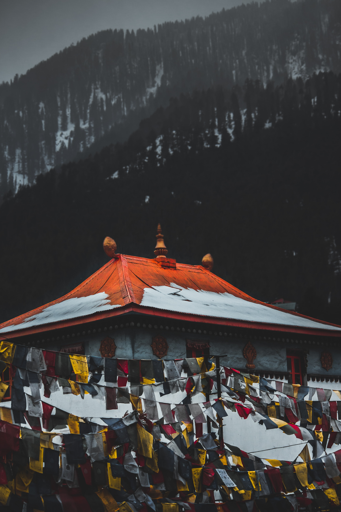
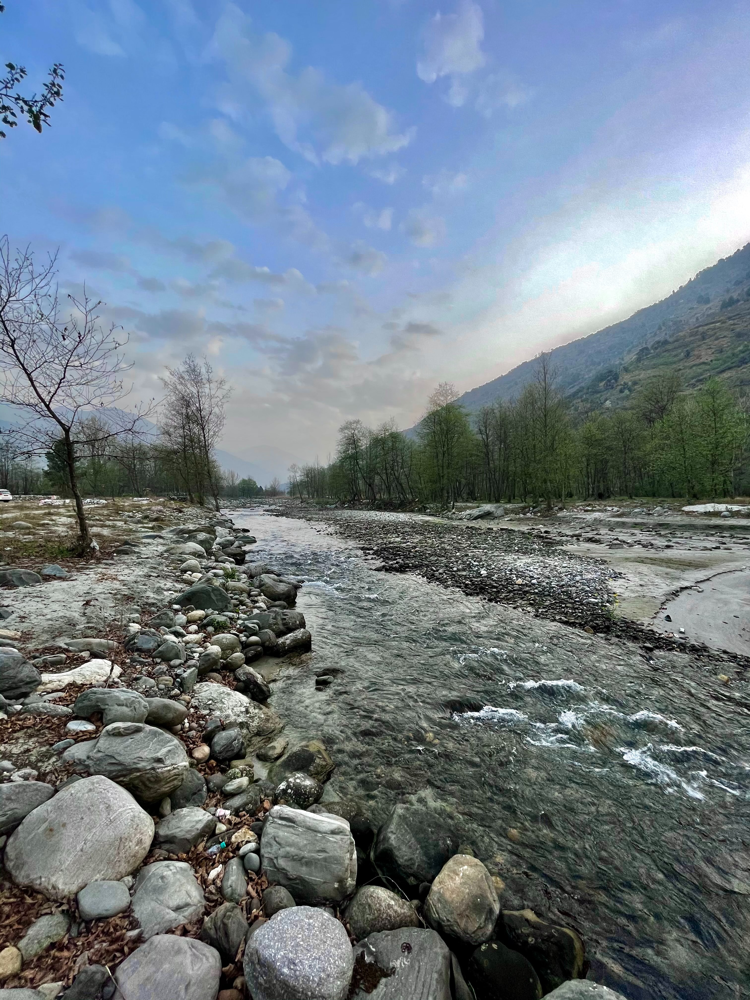
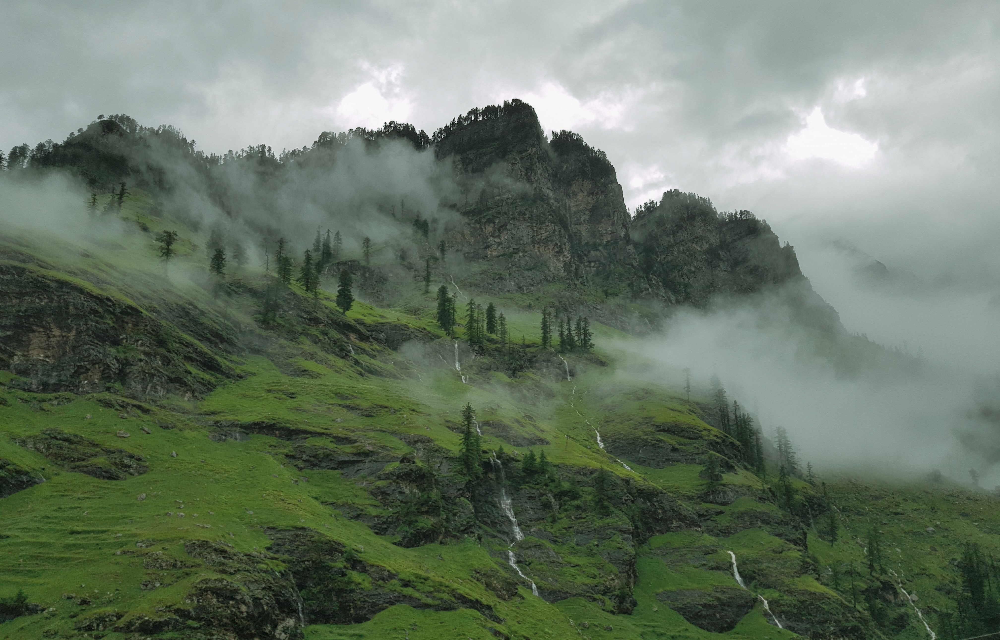

Shillong is a hill station in the northeastern part of India and the capital of Meghalaya, which means "The Abode of Clouds".[5] It is the headquarters of the East Khasi Hills district. Shillong is the 330th most populous city in India with a population of 143,229 according to the 2011 census.[6] It is said that the rolling hills around the town reminded the British of Scotland. Hence, they would also refer to it as the "Scotland of the East".
Shillong has steadily grown in size since it was made the civil station of the Khasi and Jaintia Hills in 1864 by the British. In 1874, on the formation of Assam as the Chief Commissioner's Province, it was chosen as the headquarters of the new administration because of its convenient location between the Brahmaputra and Surma valleys and more so because the climate of Shillong was much cooler than tropical India.[8] Shillong remained the capital of undivided Assam until the creation of the new state of Meghalaya on 21 January 1972, when Shillong became the capital of Meghalaya, and Assam moved its capital to Dispur in Guwahati.
Most of the Shillong population belong to the Khasi tribe, who are predominantly Christian. There are significant Assamese, Bengali and Nepali minorities. An interesting aspect of Khasis are that they are a matrilineal society - the mother's surname is passed on to the children and the youngest daughter look after the ancestral property. The head of the family and clan is still the man and the system functions only to protect women from discrimination. However, this has evolved with time and cross-culture marriages where the definition of the society as a matrilineal one is also changing. This is not be confused with 'matriarchal' societies.
